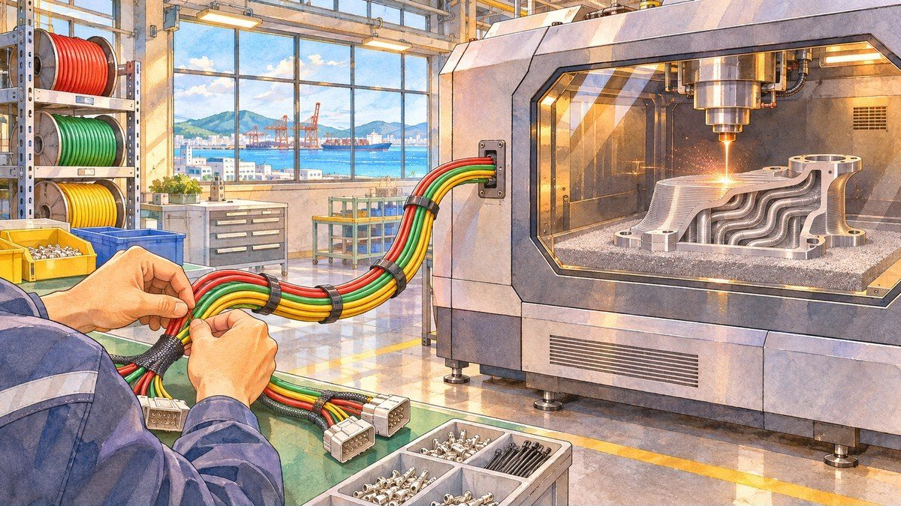

2026년 11월 17일 화요일 지면 › 기획·연재
창원 강소기업을 간다 ① / 17일케이블 잇던 회사, 금속을 쌓다…대건테크

창원 대건테크는 두 가지를 만든다. 하나는 산업용 케이블 하네스, 곧 기계 안에서 전기와 신호를 나르는 전선 묶음이다. 공작기계 제어반, 반도체 장비, 방산 장비, 태양광·이차전지 생산설비에 들어가는 전선 묶음을 설계하고 조립한다. 다른 하나는 금속 가루를 얇게 깔고 레이저로 녹여 한 층씩 쌓아 부품을 만드는 금속 3D 프린터(PBF 방식)다. 회사는 자체 브랜드 dpert로 M135·M270·M500 등을 공급하며, 최대 출력 크기(빌드 사이즈)가 800mm라고 소개한다.
회사 홈페이지에 따르면 출발은 1998년 10월 '대건기술'이다. 반도체 장비용 케이블 조립에서 시작해 2004년 법인(㈜대건테크)으로 바뀌었다. 홈페이지 연혁에는 군용 시험장비, 누리호 엔진 케이블 제작 참여, 국방품질경영체제(DQMS)·KS Q 9100(항공우주 품질) 인증, 원자력발전소용 3D 프린팅 부품 공급 이력이 적혀 있다.
전환의 배경에는 위기가 있었다. 2017년 프레시안 보도에 따르면 회사는 대기업 납품 비중이 90%를 넘는 구조였고, 2015년 주거래처의 장기 파업 여파로 유동성 위기를 겪었다. 같은 보도는 회사가 당시 경남창조경제혁신센터의 지원을 받았으며, 이후 해외 시장과 자체 브랜드 제품 확대를 추진했다고 전했다. 2016년 매출은 약 260억원으로 보도됐다.
지금의 도전은 시장을 넓히는 일이다. 산업일보에 따르면 회사는 6월 태국 방콕에서 열린 제조 전시회 ME2026에 창원산업진흥원 한국공동관으로 참가해 동남아 시장을 두드렸다. 마그네슘 분말 장비와 고기능 플라스틱(PEEK) 전용 장비도 개발해 국방·항공우주·금형·의료 분야를 겨냥한다. 회사는 홈페이지에서 지식재산권 30건 이상, 누적 수출 4,000만 달러 이상이라고 소개한다.
금속 3D 프린팅은 여러 부품을 조립하던 구조를 한 덩어리로 만들고, 금형 안에 복잡한 냉각 통로를 넣을 수 있다는 장점이 있다. 다만 장비 가격과 소재 비용, 양산 속도의 한계로 기존 가공을 대체하기보다 보완하는 기술로 평가된다. 회사 관계자도 산업일보 인터뷰에서 적층제조가 기존 방식을 보완한다고 설명했다.
출처
회사 홈페이지(11.16 열람)·언론 보도 기준 · 매출은 2016년 보도 기준
이 호의 다른 기사
- 오늘의 초점웅동1지구 1,009억 '먼저 지급' 놓고 공방…"절차 하자" vs "손실 줄이려"
- 지역 · 경남17일 저녁 비 5㎜ 안팎…수능일 19일 창원 아침 3도
- 지역 · 경남진해신항 배후부지 23~24일 설계심의…1단계 준설 12월 발주 예정
- 지역 · 경남북면 화천리 국민체육센터, 6년 만에 백지화…"암반 섞여 부적합"
- 지역 · 경남경남대 등 4개 기관, 마산 스마트그린산단 '제조 AX' 협약
- 지역 · 경남"태만 신고 2회면 출국" 계절근로 준수사항 논란
- 정치 · 경제한화오션, 하청 교섭 36개 중 '안전 6개'만…개정 노조법 첫 시험대
- 기획·연재대건테크가 걸어온 길과 세 갈래 사업
- 기획·연재11월 17일, 나라 잃은 날을 기억의 날로…삼진의 여덟 사람
- 기획·연재같은 바다, 다른 물살
- 사설창원산단의 허리가 꺾이고 있다